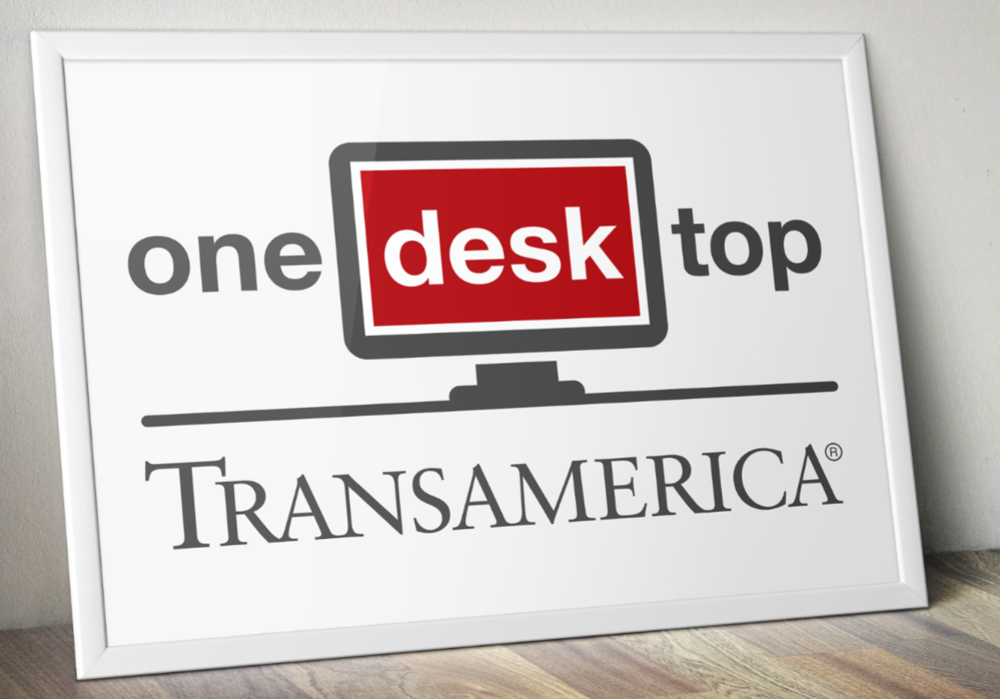
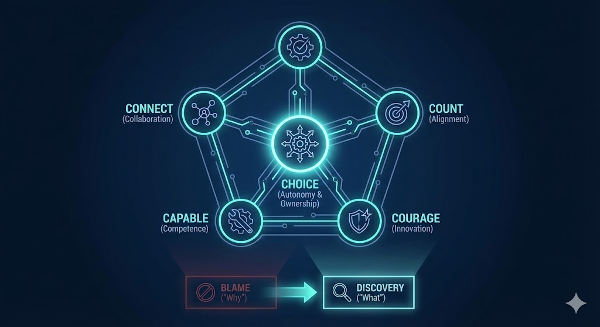

Insights & Case Studies
Field reports, case studies, essays, guides and slide walkthroughs. Featured picks are on the homepage.

Transamerica 'One Desktop'
Demonstrating the Connect and Count pillars: How an enterprise Agile transformation and rigorous SDLC compliance aligned matrixed stakeholders and led to a Best New Initiative award.
Read Case Study →Six Practices Survived a Certified Program
Twelve years as the Agile guy, most of it where you can't skip a document. When every ceremony competes with certification evidence, you find out fast which practices are load-bearing — and which ones only a reporting line would miss.
Read the Essay →Where Client Data Goes When Staff Use AI
For practices and firms, no jargon: the four ordinary ways client and patient data slips out through everyday AI tools, what HIPAA actually asks of you, and a five-step fix you can start this week.
Read the Guide →Tamper-Evident Audit Logs
My paper promised a tamper-evident log of every AI agent gate decision, and the code kept less of that promise. So I built the claim true, then adversarial reviewers found the .. that slipped past it.
Externalized Memory
Your agent forgets everything; your filesystem doesn't. One on-disk state file per project as the single source of truth — the scars from making it trustworthy, and why git, not the file, is the ground truth.
Read Field Report →Fail-Closed AI Agents
Prose tells an AI agent to behave. A gate makes it. Why I moved agent governance out of the system prompt and into the tool boundary — fail-open vs. fail-closed, two war stories, and the audit trail you get for free.
Read Field Report →Multi-Agent Handoff Protocol
What breaks when you give two AI agents a shared notepad, and the architecture that fixed it. Context rot, junk drawer handoffs, and cross-project contamination — three failure modes with one root cause.
Read Case Study →
The 5 C's Framework
Fostering Connect, Count, Capable, Courage, and Choice (Autonomy & Ownership) in highly regulated environments. Scaling autonomous execution by shifting from blame-oriented 'Why' to discovery-oriented 'What' questions.
Read Whitepaper →
Implementing the 5 C's
An executive briefing and tactical rollout strategy for embedding the 5 C's across traditional waterfall and V-Model lifecycles, accelerating delivery without sacrificing DO-178B/C compliance.
View Slide Deck →